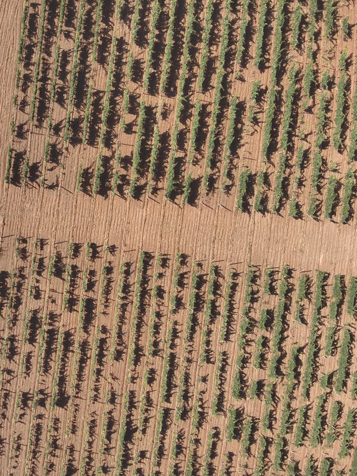
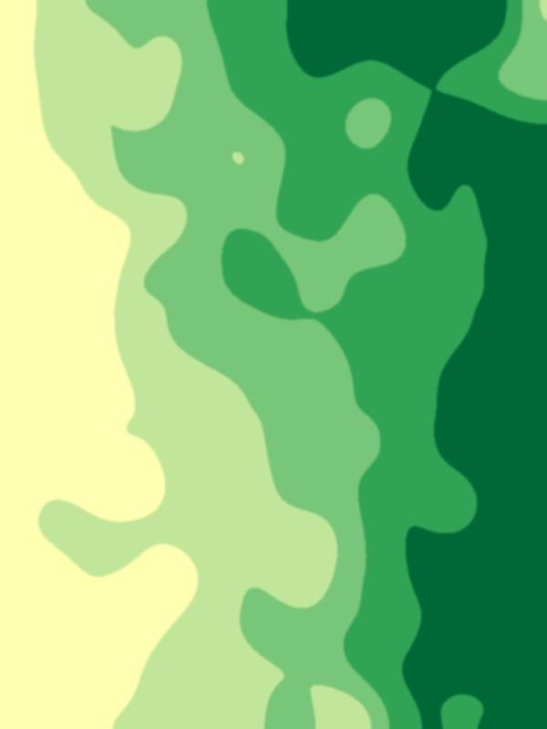
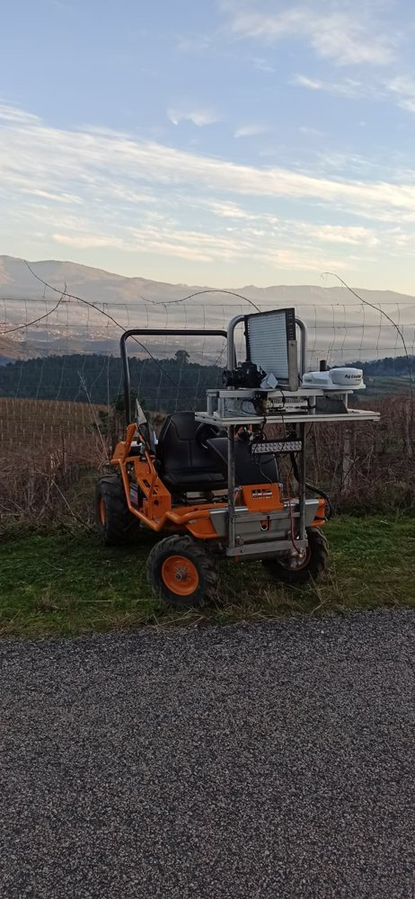
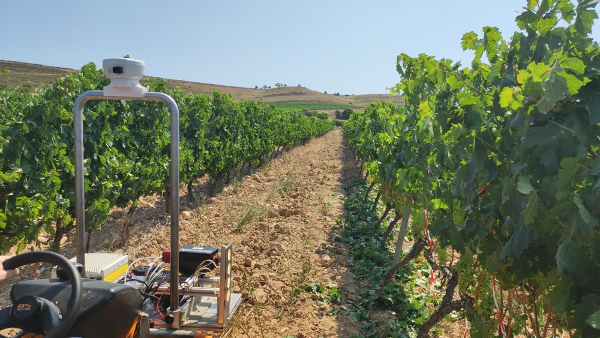
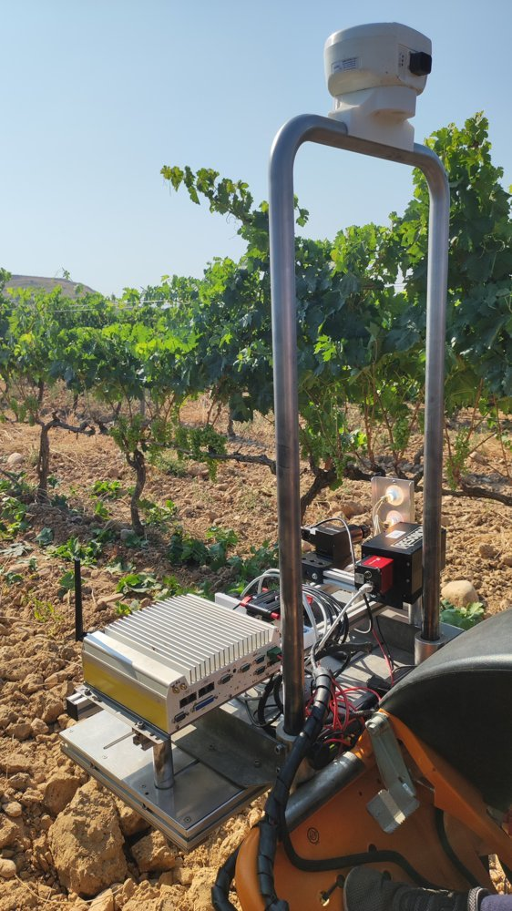
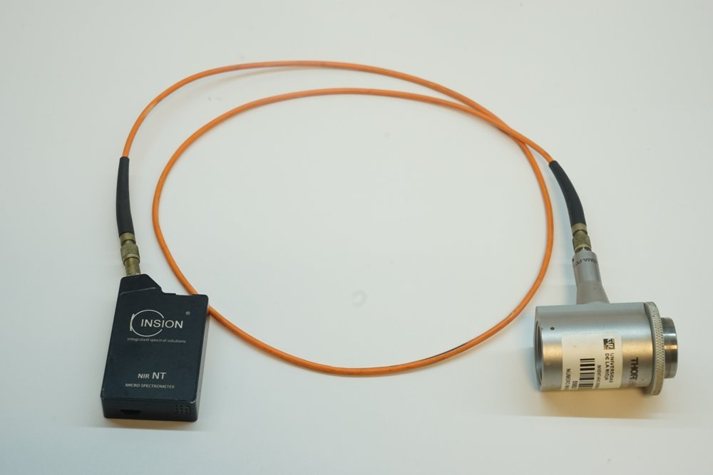
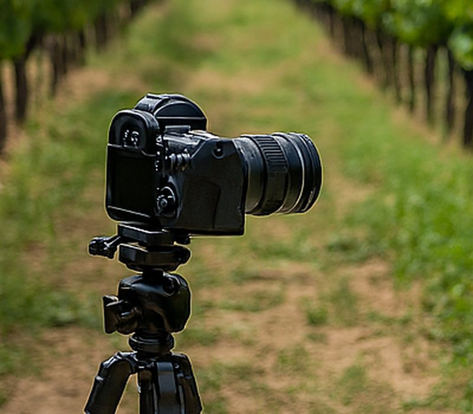
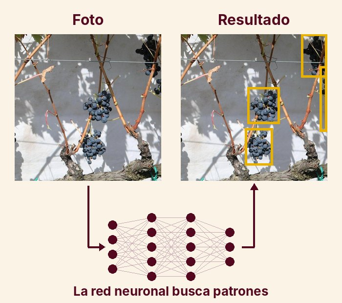

La ciencia detrás
Cómo aprende una IA a mirar un viñedo, qué puede hacer, qué no, y los artículos de donde sale todo.
Cómo aprende una IA a ver
Una red neuronal no «entiende» un viñedo: aprende patrones a partir de ejemplos. Para enseñarle a encontrar racimos, personas expertas marcan con una caja cada racimo en miles de fotos. Para enseñarle a ver el mildiu, otras personas señalan las zonas con síntomas.
Después se comprueba con fotos que el modelo no ha visto, para medir cuánto acierta de verdad. Si las fotos de entrenamiento y las de la prueba son muy parecidas, el resultado engaña; por eso los artículos usan conjuntos separados y distintos viñedos.
Qué puede hacer
Revisar muchas cepas de forma rápida y repetible, localizar racimos o síntomas, y entregar datos de todo el viñedo, no solo de unas pocas plantas. Eso permite decidir antes y con más información.
Qué no puede hacer
Ver lo que la cámara no ve: si una hoja tapa un racimo, el modelo no lo cuenta. Tampoco funciona igual con cualquier luz, en cualquier fase de la planta o con síntomas muy parecidos. Los artículos lo miden y lo dicen: por ejemplo, la detección temprana de racimos e inflorescencias depende de la fase y de la iluminación (Íñiguez et al., 2025a). Y siempre hace falta validar en campo y que una persona decida.
Quién investiga
Detrás de los retos hay personas del grupo de investigación Televitis, de la Universidad de La Rioja y del Instituto de Ciencias de la Vid y del Vino (ICVV). Estas son algunas de ellas:
Rubén Iñiguez Mangado
Investigador posdoctoral del ICVV · Autor de esta web
Doctor en Enología, Viticultura y Sostenibilidad por la Universidad de La Rioja (2025), con mención internacional. Desarrolló en el ICVV su tesis sobre cómo estimar la cosecha del viñedo con inteligencia artificial y visión por computador, que aporta nuevas herramientas para prever la cantidad de uva de un viñedo. Es primer autor de los estudios de recuento de racimos y de fases de la vid en que se basan los retos.
María Paz Diago
Profesora Titular de Viticultura (Universidad de La Rioja) · Investigadora del ICVV
Doctora en Ciencias Agrarias y Alimentarias y Master of Science en Viticultura y Enología por la Universidad de California, Davis. En el ICVV investiga la viticultura de precisión y las tecnologías no invasivas, y es investigadora principal de Televitis y del proyecto HyperGrape. Dirige el Departamento de Agricultura y Alimentación de la Universidad de La Rioja.
Inés Hernández
Doctora por la Universidad de La Rioja (2025)
Desarrolló en el ICVV su tesis, «Artificial intelligence and non-invasive sensing technologies for early detection of downy mildew in grapevine», un método con IA y visión artificial para detectar el mildiu en el viñedo. Es primera autora de los artículos en que se basa el reto del mildiu y suma 16 artículos y 9 comunicaciones a congresos.
Javier Tardáguila
Catedrático de Viticultura de Precisión (Universidad de La Rioja) · Fundador de Televitis
Doctor por la Universidad de Padua (Italia) e investigador del ICVV. Trabaja en viticultura de precisión, robótica y tecnologías emergentes. Ha liderado varios proyectos europeos, como NoPest, que buscó nuevas soluciones contra las enfermedades causadas por hongos. Mantiene una intensa transferencia de tecnología con bodegas y empresas.
El resto del equipo
Juan Fernández-Novales
Investigador del ICVV
Con una larga trayectoria investigadora, es especialista en espectroscopía NIR e imagen hiperespectral en el sector agroalimentario. Analiza datos espectrales y desarrolla modelos para la viticultura de precisión. Es además profesor ayudante doctor del área de Ingeniería Agroforestal de la Universidad de La Rioja.
Ignacio Barrio
Investigador del ICVV
Investigador predoctoral FPI, matemático e ingeniero informático. Aplica ciencia de datos para estimar la composición de la uva sin tocarla, en el proyecto HyperGrape, y es coautor de más de 20 artículos.
Aitana Tejada
Investigadora del ICVV
Investigadora predoctoral FPI y graduada en Enología. Prepara su tesis sobre el uso de sensores hiperespectrales para analizar la composición de la uva, y es primera autora del estudio en que se basa «Colores que no vemos» (Tejada-González et al., 2026).
Wenchao Sheng
Investigadora del ICVV
Investigadora predoctoral y graduada en Enología. Prepara su tesis sobre la detección de residuos de pesticidas en la uva con sensores hiperespectrales.
La investigación se hace también en colaboración con otras universidades: con el profesor titular Salvador Gutiérrez, del Departamento de Ciencias de la Computación e Inteligencia Artificial de la Universidad de Granada, y con el profesor Carlos Poblete-Echeverría, de la Facultad de AgriSciences de Stellenbosch University (Sudáfrica). La lista completa de autoras, autores y colaboraciones está en Créditos.
Cada cepa cuenta
Dentro de una misma parcela hay mucha variabilidad (Bramley, 2010): por eso interesa mirar cada zona, e incluso cada cepa.


- Vigor bajo
- Medio
- Vigor alto
Con qué se mira el viñedo
¿Con qué herramientas se hace?
Los datos se obtienen desde distintas plataformas: satélites, drones y vehículos que circulan entre las filas, o con sensores y cámaras manuales (Tardaguila et al., 2021). Los sensores incluyen cámaras de imagen convencional (RGB), térmicas, multiespectrales e hiperespectrales. Después, la inteligencia artificial ayuda a interpretar esas imágenes.

Un vehículo equipado con diferentes sensores. Foto: archivo Televitis (UR-ICVV). 
El vehículo recorre las filas del viñedo recopilando datos. Foto: archivo Televitis (UR-ICVV). 
Una plataforma se puede equipar con múltiples sensores. Foto: archivo Televitis (UR-ICVV). 
Un espectrómetro portátil, que mide la luz que refleja la uva. Foto: archivo Televitis (UR-ICVV). 
Una cámara convencional (RGB), como la que da las imágenes de los tres retos. Imagen generada con IA a partir de fotografías del archivo Televitis (UR-ICVV). 
La inteligencia artificial convierte la foto en datos: aquí, dónde están los racimos. Elaboración propia con un modelo de Televitis.
Glosario
- Mildiu
- Enfermedad de la vid causada por un organismo parecido a un hongo (Plasmopara viticola). Se ve como manchas amarillentas, «de aceite», en el haz de las hojas.
- Aforo
- Estimación de la cosecha que dará un viñedo antes de vendimiar, normalmente contando racimos.
- Defoliación
- Quitar hojas de la cepa. Aquí sirve para ver los racimos que las hojas tapaban.
- Oclusión
- Cuando algo tapa lo que queremos ver; aquí, las hojas tapando los racimos.
- Viticultura de precisión
- Según la OIV, un enfoque de gestión cíclico de las operaciones de campo, basado en herramientas de información y tecnología, que utiliza múltiples fuentes de datos relacionados con el viñedo para respaldar la toma de decisiones específicas para cada lugar, con el objetivo de optimizar los procesos de producción (OIV, 2019).
- Exactitud (acierto)
- Porcentaje de casos que el modelo clasifica bien.
- F1
- Número entre 0 y 1 que resume si el modelo acierta y no se deja casos sin detectar. Cuanto más cerca de 1, mejor.
- R²
- Cuánto de lo que varía lo explica el modelo. 1 sería perfecto; 0 sería como no saber nada.
- Etiquetar
- Marcar en una imagen lo que queremos que el modelo aprenda a reconocer.
Artículos citados
- Bramley, R. G. V. (2010). Precision viticulture: managing vineyard variability for improved quality outcomes. En Managing wine quality. Volume 1: Viticulture and wine quality (cap. 12). Woodhead Publishing. doi:https://doi.org/10.1533/9781845699284.3.445
- Tardaguila, J., Stoll, M., Gutiérrez, S., Proffitt, T. y Diago, M. P. (2021). Smart applications and digital technologies in viticulture: a review. Smart Agricultural Technology, 1, 100005. doi:10.1016/j.atech.2021.100005
- Ferro, M. V. y Catania, P. (2023). Technologies and innovative methods for precision viticulture: a comprehensive review. Horticulturae, 9(3), 399. doi:10.3390/horticulturae9030399
- Laurent, C., Oger, B., Taylor, J. A., Scholasch, T., Metay, A. y Tisseyre, B. (2021). A review of the issues, methods and perspectives for yield estimation, prediction and forecasting in viticulture. European Journal of Agronomy, 130, 126339. doi:10.1016/j.eja.2021.126339
- Jaramillo, J., Vanden Heuvel, J. y Petersen, K. H. (2021). Low-cost, computer vision-based, prebloom cluster count prediction in vineyards. Frontiers in Agronomy, 3, 648080. doi:10.3389/fagro.2021.648080
- De la Fuente, M. (2014). The relevance of the yield prediction methods in vineyard management. Bulletin de l’OIV, 87(1001-1002-1003), 387–394.
- Íñiguez, R., Gutiérrez, S., Poblete-Echeverría, C., Hernández, I., Barrio, I. y Tardáguila, J. (2024). Deep learning modelling for non-invasive grape bunch detection under diverse occlusion conditions. Computers and Electronics in Agriculture, 226, 109421. doi:10.1016/j.compag.2024.109421
- Íñiguez, R., Palacios, F., Barrio, I., Hernández, I., Gutiérrez, S. y Tardaguila, J. (2021). Impact of leaf occlusions on yield assessment by computer vision in commercial vineyards. Agronomy, 11, 1003. doi:10.3390/agronomy11051003
- Íñiguez, R., Poblete-Echeverría, C., Barrio, I., Hernández, I., Gutiérrez, S., Martínez-Cámara, E. y Tardáguila, J. (2025a). Impact of phenological and lighting conditions on early detection of grapevine inflorescences and bunches using deep learning. Agriculture, 15, 1495. doi:10.3390/agriculture15141495
- Íñiguez, R., Wolela, F., Gonzalez Pavez, M. I., Barrio, I., Tardáguila, J., Venter, T. y Poblete-Echeverría, C. (2025b). Artificial intelligence-driven classification method of grapevine major phenological stages using conventional RGB imaging. OENO One, 59(2). doi:10.20870/oeno-one.2025.59.2.9306
- Poblete-Echeverría, C., Berry, A., Venter, T., Velez, S., Gonzalez Pavez, M. I. e Íñiguez, R. (2025a). Morphological image analysis for estimating grape bunch weight under different irrigation regimes in Cabernet-Sauvignon. OENO One, 59(2). doi:10.20870/oeno-one.2025.59.2.9309
- Poblete-Echeverría, C., Hernández, I., Íñiguez, R., Gutiérrez, S., Barrio, I. y Tardáguila, J. (2025b). Using artificial intelligence for automatic and fast detection of downy mildew symptoms in grapevine canopies. European Journal of Agronomy, 170, 127755. doi:10.1016/j.eja.2025.127755
- Gessler, C., Pertot, I. y Perazzolli, M. (2011). Plasmopara viticola: a review of knowledge on downy mildew of grapevine and effective disease management. Phytopathologia Mediterranea, 50(1), 3–44. doi:https://doi.org/10.14601/Phytopathol_Mediterr-9360
- Gadoury, D. M., Cadle-Davidson, L., Wilcox, W. F., Dry, I. B., Seem, R. C. y Milgroom, M. G. (2012). Grapevine powdery mildew (Erysiphe necator): a fascinating system for the study of the biology, ecology and epidemiology of an obligate biotroph. Molecular Plant Pathology, 13(1), 1–16. doi:10.1111/j.1364-3703.2011.00728.x
- OIV (2019). Definición y principios generales de la OIV en materia de viticultura de precisión (Resolución OIV-VITI 593-2019). Organización Internacional de la Viña y el Vino. oiv.int/es/node/3113
- Tejada-González, A., Barrio, I., Poggi, L., Fernández-Novales, J., Martínez-Lapuente, L., Guadalupe, Z. y Diago, M. P. (2026). On-the-go hyperspectral imaging for monitoring grape maturity in Tempranillo: supporting adaptive harvest decisions. OENO One, 60(3), 9877. doi:10.20870/oeno-one.2026.60.3.9877
- HyperGrape (2025). HyperGrape: desarrollando la aplicación de tecnologías no invasivas para monitorizar en tiempo real y a la entrada de bodega la composición de la uva (PID2023-150555OB-I00). Universidad de La Rioja (grupo Televitis, ICVV); financiado por MICIU/AEI/10.13039/501100011033 y FEDER, UE. hypergrape.unirioja.es
- Del Frari, G., Oliveira, H. y Boavida Ferreira, R. (2021). White rot fungi (Hymenochaetales) and esca of grapevine: insights from recent microbiome studies. Journal of Fungi, 7(9), 770. doi:10.3390/jof7090770
- Mugnai, L., Graniti, A. y Surico, G. (1999). Esca (black measles) and brown wood-streaking: two old and elusive diseases of grapevines. Plant Disease, 83(5), 404–418. doi:10.1094/PDIS.1999.83.5.404
- Hernández, I., Silva, R., Melo-Pinto, P., Gutiérrez, S. y Tardaguila, J. (2025). Early detection of downy mildew in vineyards using deep neural networks for semantic segmentation. Biosystems Engineering, 252, 15–31. doi:10.1016/j.biosystemseng.2025.02.007
- Hernández, I., Gutiérrez, S., Barrio, I., Íñiguez, R. y Tardaguila, J. (2024b). In-field disease symptom detection and localisation using explainable deep learning: use case for downy mildew in grapevine. Computers and Electronics in Agriculture, 226, 109478. doi:10.1016/j.compag.2024.109478
- Hernández, I., Gutiérrez, S. y Tardaguila, J. (2024a). Image analysis with deep learning for early detection of downy mildew in grapevine. Scientia Horticulturae, 331, 113155. doi:10.1016/j.scienta.2024.113155
- Hernández, I., Gutiérrez, S., Ceballos, S., Íñiguez, R., Barrio, I. y Tardaguila, J. (2021). Artificial intelligence and novel sensing technologies for assessing downy mildew in grapevine. Horticulturae, 7(5), 103. doi:10.3390/horticulturae7050103
- Palacios, F., Bueno, G., Salido, J., Diago, M. P., Hernández, I. y Tardaguila, J. (2020). Automated grapevine flower detection and quantification method based on computer vision and deep learning from on-the-go imaging using a mobile sensing platform under field conditions. Computers and Electronics in Agriculture, 178, 105796. doi:10.1016/j.compag.2020.105796
- Gutiérrez, S., Diago, M. P., Fernández-Novales, J. y Tardaguila, J. (2018b). Vineyard water status assessment using on-the-go thermal imaging and machine learning. PLoS ONE, 13(2), e0192037. doi:10.1371/journal.pone.0192037
- Gutiérrez, S., Fernández-Novales, J., Diago, M. P., Íñiguez, R. y Tardaguila, J. (2021). Assessing and mapping vineyard water status using a ground mobile thermal imaging platform. Irrigation Science. doi:10.1007/s00271-021-00735-1
- Gutiérrez, S., Fernández-Novales, J., Diago, M. P. y Tardaguila, J. (2018a). On-the-go hyperspectral imaging under field conditions and machine learning for the classification of grapevine varieties. Frontiers in Plant Science, 9, 1102. doi:10.3389/fpls.2018.01102
- Gutiérrez, S., Tardaguila, J., Fernández-Novales, J. y Diago, M. P. (2019). On-the-go hyperspectral imaging for the in-field estimation of grape berry soluble solids and anthocyanin concentration. Australian Journal of Grape and Wine Research, 25, 127–133. doi:10.1111/ajgw.12376